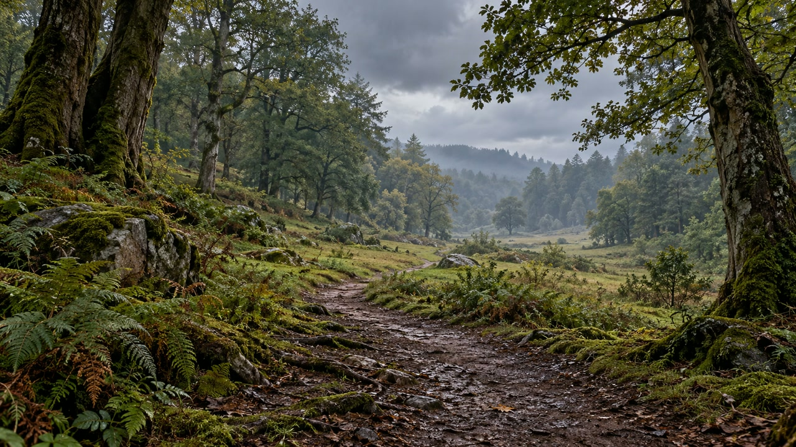

Rain sounds or silence for studying?
By MindVerseChronicles · Reviewed 2026-10-24

AI-created artwork from our forest ambience.
There is no background sound that works best for everyone. Silence is a useful starting point. Rain is an optional atmosphere to try if you prefer having something in the background; enjoying it does not establish that you are learning more.
What the evidence can tell us
A 2024 systematic review of 31 studies examined several forms of auditory stimulation, including music, ambient noise, white noise and binaural beats. Findings on cognition and physiological arousal were mixed or insufficient to support a simple, universal prescription. It does not establish a study benefit for the rain soundscapes on this website. Chee and colleagues, 2024.
A separate experiment with 125 fifth-grade students found poorer language comprehension with meaningful background speech than with silence. That concerns children and particular tasks and noise conditions: it does not show what an adult will experience while studying with rain. It does provide a reason to distinguish a spoken conversation from a nonverbal background. Socher and colleagues, 2026.
Rain recordings also differ from laboratory white noise. A label such as natural, pink or relaxing does not transfer evidence from one sound to another.
Make the choice around the task
For reading a difficult passage or checking wording, begin in silence if that is available. If background conversation keeps drawing your attention, try a quiet nonverbal ambience as an alternative, without assuming it will solve the distraction. Avoid turning it up simply to overpower the room.
For a familiar, routine task, a preferred atmosphere may be enough reason to choose rain. Keep the reason honest: liking the setting is different from demonstrating better recall or concentration. You can also leave the screen out of view if the moving image competes with your work.
A small comparison you can make yourself
Choose two similar pieces of work and allow about 10 to 20 minutes for each. Try one in silence and one with rain at a low, comfortable volume. Keep the device and other interruptions as similar as practical.
After each session, note whether you kept returning to the sound, had to reread, or found the background tiring. Check the work itself as well as how pleasant the session felt. On another day, reverse the order. Different tasks may lead to different choices.
This is a way to explore a preference, not a scientific test of learning or a diagnosis. If the rain distracts you, choose silence or another environment; there is no reason to persevere with an atmosphere that does not suit the task.
Two settings to explore, if you want rain
Gentle forest rain offers an outdoor woodland view. Forest cabin rain frames the weather from a sheltered interior. Choose between their settings, rather than treating either as a proven study aid. Both link to the full public videos, with no music or narration.
The scenery and audio sources are AI-created and assembled for MindVerseChronicles. They are imagined ambiences, not field recordings. No listening test or educational benefit is claimed for this guide.
More about sound and everyday routines · Explore the listening library